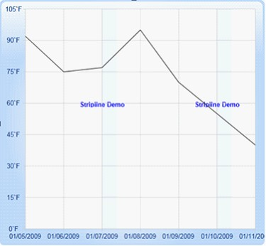

You can add Striplines (horizontal and vertical) to areas within the plot.
You can also optionally repeat these Striplines at specific intervals.
Set IsSegmented property to True to create segmented strip lines.
List of Property
The following table contains the Property details.
|
Name of the Property |
Description |
Type of the Property |
Value It Accepts |
|
StripLines |
Store all the Striplines object |
Store all the Striplines object |
Brushes |
|
Interior |
Sets the color of Strip line |
Dependency Property |
|
|
RepeatEvery |
Specifies the frequencies of Striplines are repeated |
Dependency Property |
Double |
|
RepeatUntil |
Specifies where the Striplines is repeated. |
Dependency Property |
Double |
|
StartFromAxis |
Specify Striplines starts from the beginning of the axis. |
Dependency Property |
Bool |
|
Offset |
You can add an Offset to that starting location, when StartFromAxis is set to true. |
Dependency Property |
Double |
|
Start |
Specifies where the Stripline starts when StartFromAxis is false. |
Dependency Property |
Double |
|
IsSegmented |
Enable/Disable segmented Stripline feature. |
Dependency Property |
Bool |
|
SegmentStartValue |
Initializes the segment start value for Stripline |
Dependency Property |
Bool |
|
SegmentEndValue |
Initializes the segment end value for Stripline. |
Dependency Property |
Bool |
|
ContentHeight |
Initialize the Stripline content height. |
Dependency Property |
Double |
|
ContentWidth |
Initialize the Stripline content width. |
Dependency Property |
Double |
|
ContentVisibility |
Determine the visibility of Stripline content. |
Dependency Property |
Visibility |
|
Content |
Specify the content is needed to display on Stripline. It may be any Framework Element. |
Dependency Property |
Object |
Adding Striplines
The following code illustrates how to add Striplines (horizontal and vertical) to areas within the plot.
|
[Xaml]
<syncfusion:ChartArea.PrimaryAxis> <syncfusion:ChartAxis ValueType="DateTime" IsAutoSetRange="True"> <syncfusion:ChartAxis.StripLines> <syncfusion:ChartStripLine StartFromAxis="True" Offset="2" RepeatEvery="3" Interior="AliceBlue" Content="Stripline Demo" ContentWidth="40" Width="30"/> </syncfusion:ChartAxis.StripLines> </syncfusion:ChartAxis> </syncfusion:ChartArea.PrimaryAxis> |
|
[C#]
ChartStripLine cs = new ChartStripLine(); cs.StartFromAxis = true; cs.Offset = 2; cs.RepeatEvery = 3; cs.Interior = new SolidColorBrush(Colors. AliceBlue); cs.Content = "StriplineDemo"; cs.ContentWidth=40; cs.Width = 30; this.chart1.Areas[0].PrimaryAxis.StripLines.Add(cs); |
When the code runs, the following output displays.

Figure 105: Striplines